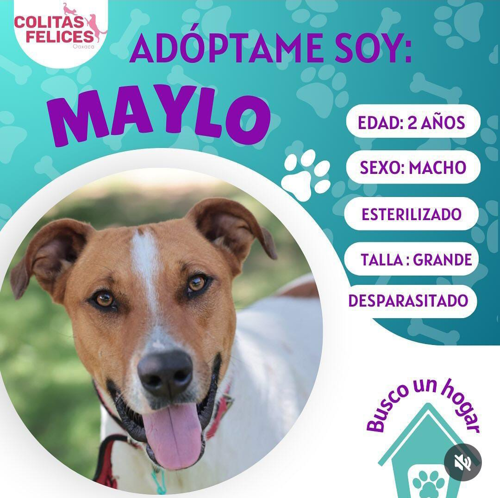
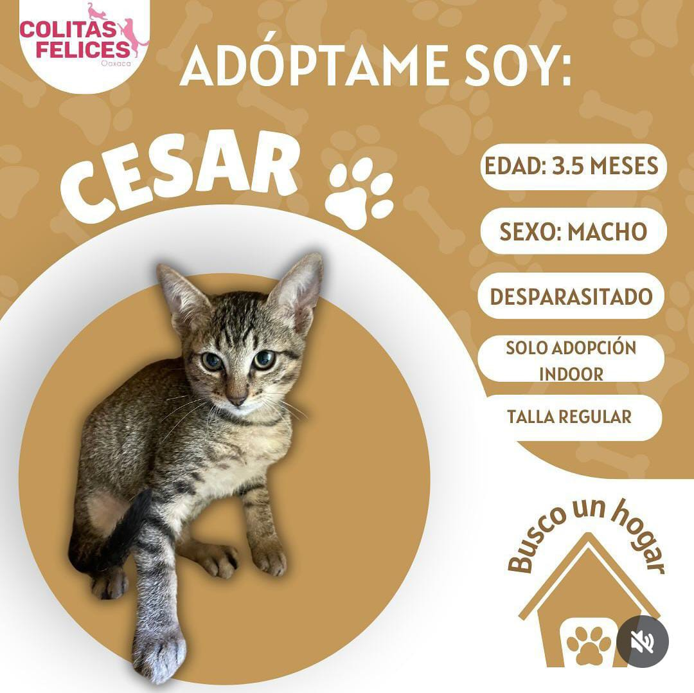
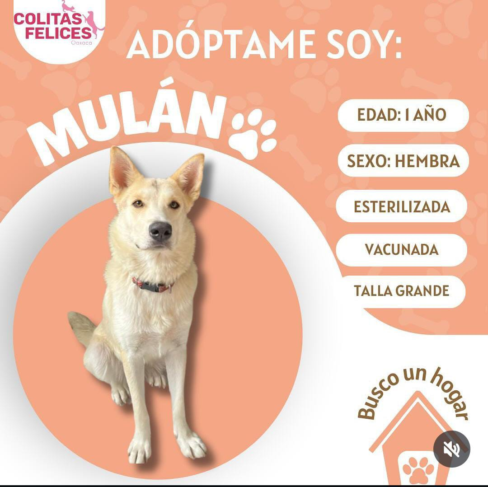
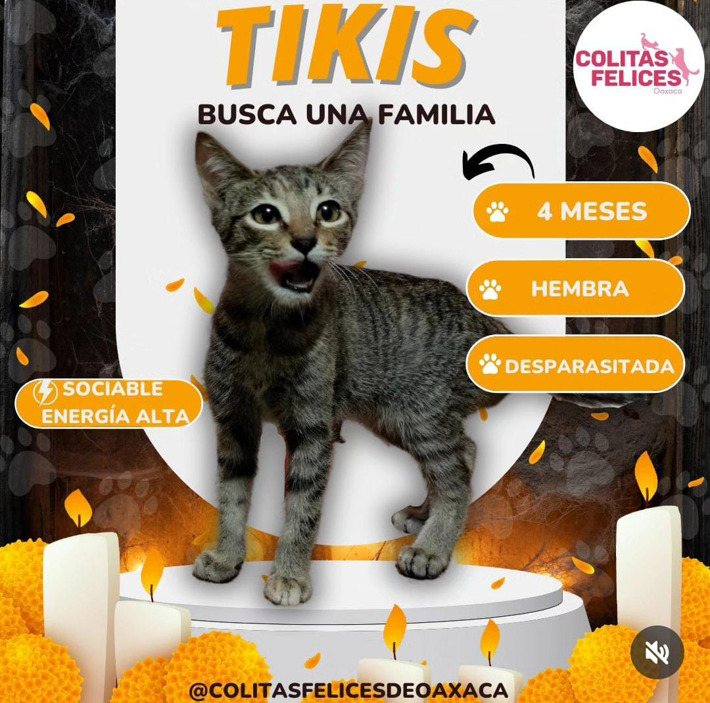

Juan Pérez
Email: juanperez@example.com
Descripción: Amante de los animales rescatados, comprometido con darles una segunda oportunidad. Mi corazón está con los perros y gatos rescatados.
Animales con los que has interactuado

Maylo
Un perro rescatado que ahora vive feliz y lleno de amor.
Interacción: Rescatado

Cesar
Este gato fue rescatado de la calle y ahora disfruta de un hogar cálido.
Interacción: Adoptado

Mulán
Una perra que ha encontrado el amor de su dueño y ahora es feliz.
Interacción: Curado (Veterinario)

Tikis
Esta gata llegó a un hogar lleno de cuidado y cariño.
Interacción: Tuvo en Resguardo Temporal